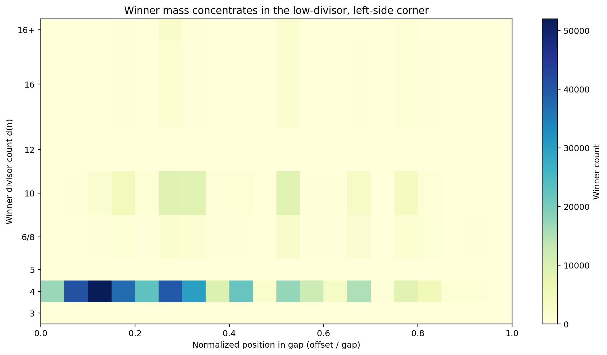

legacy
GWR story: winner heatmap
Legacy story heatmap of selected integers in normalized gap position versus divisor-count space (even-window 1e9 story surface).

- Regime
- even-window 1e9 story surface (see plot_generation_plan.md)
- Claim language
- weak
- Reproduce
visualizations/library/.venv/bin/python visualizations/library/entries/gwr-figure-07-winner-heatmap/demo.py- Chapter refs
research/02-gwr-dni/story/story/research/11-gap-ridge/
- Tags
Observable object
Where selected integers live jointly in normalized gap position and divisor-count space on the story's even-window surface.
Mechanism
Mass concentrates toward the low-divisor, left-side corner of the gap. That is the geometric reading of leftmost minimum-divisor selection under the story's measured window.
Provenance
Legacy wrap of figure_07_winner_heatmap.png.
Status and limits
- Status: legacy story measurement figure for a named window.
- Not a substitute for the universal GWR theorem proof.
- Not a
10^18program surface by itself.